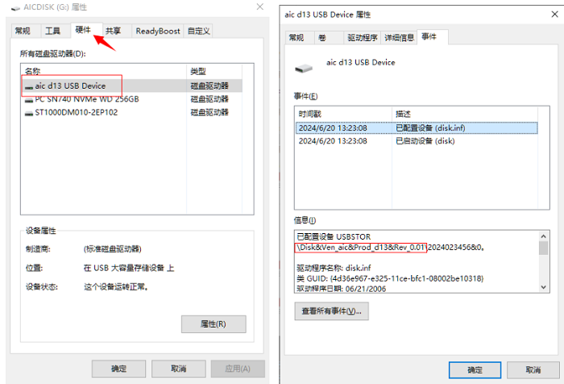

USB Device 配置
USB Device Controller 配置
-
在 menuconfig 中配置设备。使能 USB 端口，并且配置当前 USB 端口为 Device 模式：
> Board options [*] Using Usb0 Select Usb0 mode (Device) ---> -
在 menuconfig 中配置 CherryUSB 驱动。使能 CherryUSB 驱动，并且使能 Device 模式：
> Local packages options > Third-party packages options [*] CherryUSB: tiny and portable USB host/device stack for embedded system with USB IP ---> [*] Enable usb device mode --->
USB Interface 配置
- U 盘配置
-
在 menuconfig 中使能 CherryUSB 中 msc 类型的 Device Class 驱动，并且使能对应实例模板。
-
在 MSC 类型的 Device Class 驱动中有两类实例模板，一种是把读取 RAM，一种是读取 Flash 或 SDCard。
-
读取 ram，可照下面的步骤进行配置：
> Local packages options > Third-party packages options [*] CherryUSB: tiny and portable USB host/device stack for embedded system with USB IP ---> [*] Enable usb device mode ---> [*] Enable usb msc device ---> Use ram or storage template (msc ram) ---> [*] Use msc ram template -
读取 SDCard，可照下面的步骤进行配置：
> Local packages options > Third-party packages options [*] CherryUSB: tiny and portable USB host/device stack for embedded system with USB IP ---> [*] Enable usb device mode ---> [*] Enable usb msc device ---> Use ram or storage template (msc storage) ---> MSC Storage Parameter ---> [*] USBDEV_MSC_THREAD # 配置线程进行读写 [*] USBD_MSC_STORAGE_USING_HOTPLUG #支持存储媒介的热插拔 (/sdcard) MSC_STORAGE_PATH # U 盘读取的分区（这里填写的是对应的文件系统名称） (2048) USBDEV_MSC_MAX_BUFSIZE # 此值必须是 512 的倍数，增大此项，可提升读写速度，同时也会消耗更多的 ram
-
-
将单板的 USB Device 端口和 Windows PC 的 USB Host 端口连接，在 Windows PC 上会看到一个新增的 U 盘，可以正常读写。
-
修改 U 盘产品信息：
--- Enable usb msc device (aic) CONFIG_USBDEV_MSC_MANUFACTURER_STRING # 厂商信息（最大支持 8 bytes） (d13) CONFIG_USBDEV_MSC_PRODUCT_STRING # 产品信息（最大支持 16 bytes） (0.01) CONFIG_USBDEV_MSC_VERSION_STRING # 厂商信息（最大支持 4 bytes）
效果如下图：

-
- ADBD 配置
-
在 menuconfig 中使能 CherryUSB 的 Device 驱动，并且使能对应实例模板：
> Local packages options > Third-party packages options [*] CherryUSB: tiny and portable USB host/device stack for embedded system with USB IP ---> [*] Enable usb device mode ---> [*] ADBD: Android Debug Bridge daemon implementation in RT-Thread ---> [*] Enable Shell service [*] Enable File service -
将单板的 USB Device 端口和 PC 的 USB Host 端口连接，在 PC 端运行 adb shell 命令即可进行 ADB 操作。 进入 ADB Shell 以后，可以通过
exitas命令退出：C:\Users\xxx>adb shell
ls Directory /: ram <DIR> data <DIR> rodata <DIR> sdcard <DIR> udisk <DIR>
exit
exitas
exitas
C:\Users\xxx>
重要：AiBurn烧录软件默认会不停的使用 ADB 命令来扫描单板是否启动完成，在使用 ADB 命令时为了避免冲突建议关闭AiBurn软件，或者在AiBurn中关闭ADB 扫描设备功能。
-
- Audio 配置
- 在 menuconfig 中使能 CherryUSB 中 audio 类型的 Device Class
驱动，并且使能对应实例模板：
> Local packages options > Third-party packages options [*] CherryUSB: tiny and portable USB host/device stack for embedded system with USB IP ---> [*] Enable usb audio device ---> [*] Use audio speaker template ---> Use audio speaker template (UAC2.0) ---> -
将单板的 USB Device 端口和 Windows PC 的 USB Host 端口连接，在 Windows PC 上会看到一个新增的 Audio 设备，可以正常播放音频。如图所示：
- 在 menuconfig 中使能 CherryUSB 中 audio 类型的 Device Class
驱动，并且使能对应实例模板：
- MIDI 配置
-
在 menuconfig 中使能 CherryUSB 中 midi 类型的 Device Class 驱动，并且使能对应实例模板：
Local packages options > Third-party packages options [*] CherryUSB: tiny and portable USB host/device stack for embedded system with USB IP ---> [*] Enable usb midi device ---> [*] Use midi template -
将单板的 USB Device 端口和 Windows PC 的 USB Host 端口连接，在 Windows PC 的设备管理其中，可以看到一个新增的 MIDI 设备，需要在特定的 MIDI 工具（如 MidiEditor）中使用。如图所示，在 MIDI 工具中选择对应的 MIDI 设备进行数据的收发：
-
-
USB Display 配置
-
在 Menuconfig 中使能 CherryUSB 中 Display 类型的 Device Class 驱动，并且使能对应实例模板：
> Local packages options > Third-party packages options [*] CherryUSB: tiny and portable USB host/device stack for embedded system with USB IP ---> [*] Enable usb device mode ---> [*] Enable usb display device ---> [*] Use display template -
将单板的 USB Device 端口和 Windows PC 的 USB Host 端口连接，并且在 PC 安装对应的 AicUsbGraphicDriver 驱动，单板将会成为 PC 的一个扩展显示屏。
-
- UVC 配置
-
在 Menuconfig 中使能 CherryUSB 中 UVC 类型的 Device Class 驱动，并且使能对应实例模板：
> Local packages options > Third-party packages options [*] CherryUSB: tiny and portable USB host/device stack for embedded system with USB IP ---> [*] Enable usb device mode ---> [*] Enable usb video device ---> [*] Use video template ---> [X] Use video dvp sensor templateUsevideotemplate选项下有多种配置可以进行选择，分别有：Use video static mjpeg template Use video static yuyv template Use video static nv12 template Use video dvp sensor template
其中前三者都是传输静态图像的一个测试实例模板，
Usevideodvpsensortemplate才是传输摄像头图像数据的实例模板。 -
用户使用：
将单板的 USB Device 端口和 Windows PC 的 USB Host 端口连接，在 Windows PC 上看到一个新增的 Camera 设备，并且可以正常接收设备返回的图像数据。
如图所示：
-